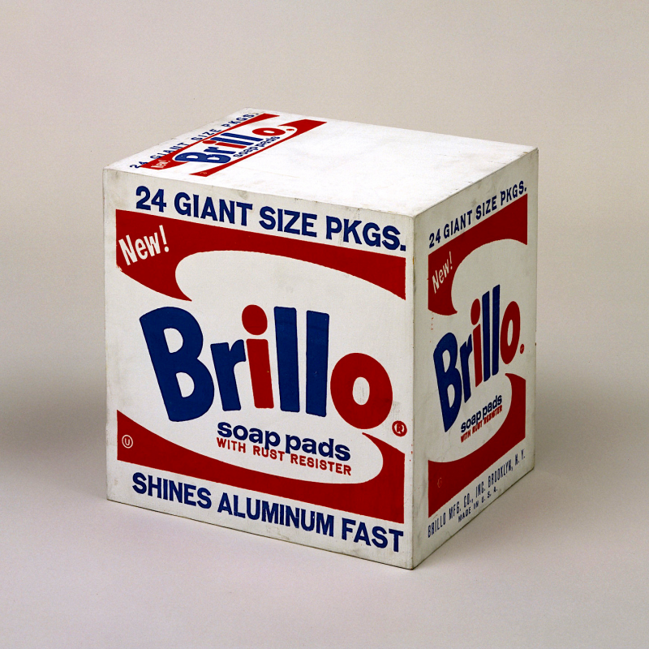
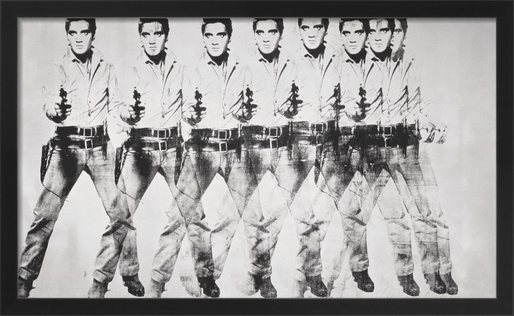

Andy Warhol
El rey del Pop Art
Artist
Andy Warhol, cuyo nombre real era Andrew Warhola, nació el 6 de agosto de 1928 en Pittsburgh, Pensilvania, Estados Unidos. Hijo de inmigrantes eslovacos, creció en un hogar humilde durante la Gran Depresión. Desde pequeño, mostró un gran talento para el dibujo y la ilustración, influenciado por su madre, quien le enseñaba arte popular.
Estudió diseño gráfico en el Instituto Carnegie de Tecnología, graduándose en 1949. Después de mudarse a Nueva York, trabajó como ilustrador comercial para revistas de moda como Vogue y Harper's Bazaar, donde creó anuncios llamativos que le dieron fama y estabilidad económica.
En la década de 1960, Warhol se convirtió en el líder del movimiento Pop Art. Utilizó técnicas como la serigrafía para crear obras que reproducían imágenes de la cultura de consumo americana, como latas de sopa Campbell's, retratos de celebridades como Marilyn Monroe y Elvis Presley, y productos cotidianos. Su arte cuestionaba la diferencia entre el arte "alto" y la cultura popular, reflejando la sociedad de masas.
Fundó "The Factory", un estudio en Manhattan que se convirtió en un centro de creatividad, atrayendo a artistas, músicos y celebridades. Warhol también experimentó con el cine underground, produciendo más de 60 películas, y se involucró en la música y la publicación. En 1968, sobrevivió a un intento de asesinato por parte de una activista radical.
Warhol falleció el 22 de febrero de 1987 en Nueva York, tras complicaciones en una cirugía. Su legado perdura en el arte contemporáneo, el diseño gráfico y la cultura pop, inspirando a generaciones de artistas a explorar temas de fama, consumo y modernidad.

Works
- Campbell's Soup Cans (1962): Serie de 32 pinturas que representan latas de sopa Campbell's, simbolizando la cultura de consumo masivo y la repetición en la sociedad americana.
- Marilyn Diptych (1962): Retrato serigráfico de Marilyn Monroe dividido en paneles coloreados y en blanco y negro, explorando temas de fama, mortalidad y la idolatría de las celebridades.
- Eight Elvises (1963): Serie de ocho impresiones de Elvis Presley, capturando la iconografía pop de la época y la fascinación por las estrellas del rock.
- Brillo Boxes (1964): Esculturas que imitan cajas de detergente Brillo, cuestionando la distinción entre arte y objetos cotidianos, y criticando el consumismo.
- Mao (1972): Serie de retratos del líder chino Mao Zedong, utilizando técnicas de serigrafía para explorar el poder político y la manipulación de la imagen.
Gallery

Brillo Boxes
1964

Campbell's Soup Cans
1962

Eight Elvises
1963

Mao
1972

Marilyn Diptych
1962
About Pop Art
- Warhol worked as a commercial illustrator before dedicating himself to art, creating advertisements for shoes and beauty products.
- He founded "The Factory", a studio in New York that became a meeting place for artists, musicians, and celebrities.
- Warhol produced more than 60 underground films, including "Empire", an 8-hour film showing the Empire State Building.
- He was known for his collection of objects, including more than 600 shoe boxes and thousands of soup cans.
- Warhol survived an assassination attempt in 1968 by Valerie Solanas, author of the SCUM manifesto.
- He published "The Philosophy of Andy Warhol (From A to B and Back Again)", a book that reveals his thoughts on fame and society.